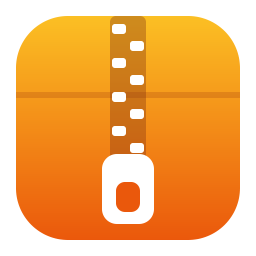
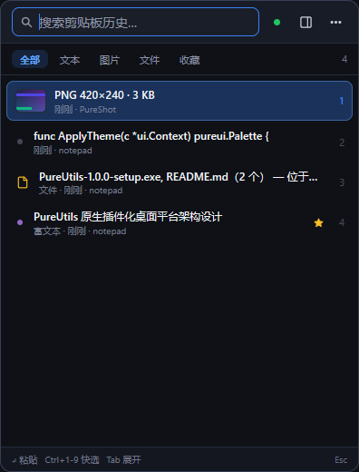
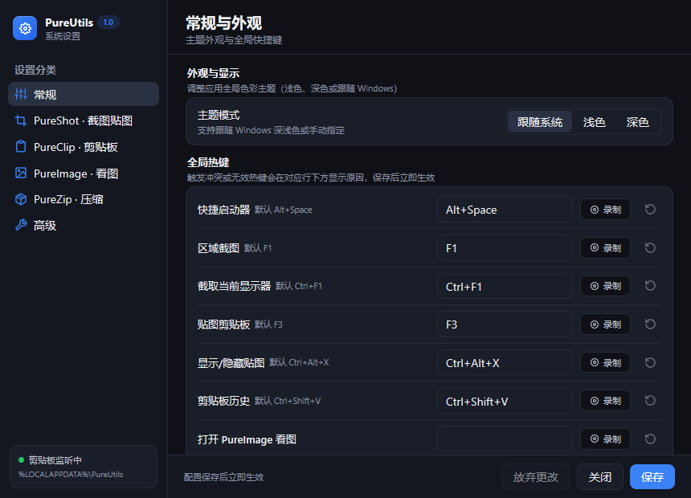

Windows 原生效率工具集，单文件、零 WebView。
将截图贴图（PureShot）、剪贴板历史（PureClip）、多格式看图与空格预览（PureImage）、压缩包管理（PureZip）以及 Alt+Space 上下文启动器整合进同一个 Go + MyGo 原生应用。支持编译期裁剪、安装勾选与设置页实时启停。
Windows 10/11 x64 · Go 1.27 + MyGo GPU UI · 零 cgo / 零 JS · GNU AGPL-3.0 · 无需管理员权限

功能模块规格
四个内置插件均以独立 purekit.Plugin 实现，跨模块能力通过 Capability Bus 按需联动，禁用任意模块均自动降级。
屏幕冻结选区、窗口锚点自动吸附、像素放大镜取色（按 C 复制 HEX 色值）以及桌面置顶悬浮贴图。
隔离 SQLite WAL 存储与 SHA-1 内容寻址图片库，呼出后直接键入即可在内存索引中完成毫秒级多词过滤。
 PureImage viewer
PureImage viewer支持 40+ 图片格式与资源管理器空格快速预览，自带 EXIF 信息读取及一键贴图联动。

PureZip zip纯 Go 实现的多格式压缩与解压管理器，支持树形目录浏览、智能解压与包内图片直接调用 PureImage 查看。
Alt+Space 全局上下文启动器自动识别资源管理器选中文件与剪贴板内容，统一托盘、热键调度与模块热开关。
界面实拍
以下截图均由代码仓库内的无头 UI 渲染测试实时生成；点击图片可查看原尺寸。





分层架构与构建方式
通过 Go AST 测试自动约束依赖方向，确保宿主、核心库与各插件可自由组合、独立演进。
读取同目录 modules.json、单实例锁消息转发与 CLI 参数路由。
条件编译注册桥装配活跃插件，管理动态托盘、热键、启动器与统一设置。
彼此零直接 Go import，跨插件动作完全通过 Capability Bus 契约调用。
可复用插件 SDK（Bus/Contracts、WAL 存储、配置 v2、剪贴板总线、Win32 与 UI 组件）。
支持三层裁剪：编译期（-tags）、安装期（modules.json）与运行时设置热开关。完整说明见 docs/ARCHITECTURE.md。
# 构建完整版 PureUtils.exe（零 cgo / 零 WebView） .\build.ps1 build # 裁剪 PureImage 解码器与 turbojpeg.dll .\build.ps1 build -CoreOnly # 按插件精确裁剪 .\build.ps1 build -Exclude purezip,pureimage # 全量单元测试 + Go AST 架构边界检查 .\build.ps1 test .\build.ps1 test -CoreOnly # 编译双版本并用 Inno Setup 打包安装程序 .\build.ps1 pack